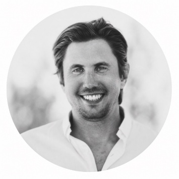

Read the land
Identify constraints, grid context, ownership patterns, planning realities, and the practical conditions that shape project viability.
Renewable energy development
Folkerman renewables works across the early stages of clean energy projects, connecting land, planning, local insight, and commercial structure.

Our business idea
We help renewable projects move from opportunity to bankable direction with disciplined site evaluation, practical stakeholder work, and clear commercial judgement.
Approach
Identify constraints, grid context, ownership patterns, planning realities, and the practical conditions that shape project viability.
Structure conversations with landowners, municipalities, technical partners, and investors so decisions are made on solid information.
Move opportunities through the first commercial and development gates with a clear path, realistic risk view, and clean handover material.
Services
Mapping land opportunities and screening sites for renewable energy potential.
Practical support for early conversations, agreements, and expectation setting.
Early assessment of planning, environmental, and local conditions before deeper spend.
Development logic, partner interfaces, risk framing, and investor-ready project material.
Team

Technical / GIS
MSc in Engineering with 18 years of experience in technical development of energy projects, including mapping, constraint analysis, site evaluation, and grid connection. GIS, corridors, practical layout, and feasibility assessment.
Permits / Stakeholders / Legal
Lawyer. 24 years of experience in company management and operational work within energy project development. Strategy, landowner and municipal contacts, permitting processes, and local anchoring.
Partners
Contact
For land opportunities, renewable project development, or commercial partnerships, get in touch.